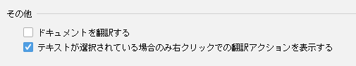

バージョン 3.1（2020/04/13）
Translation v3.1 へようこそ。このバージョンには、次の主要なアップデートが含まれています。
- ドキュメント翻訳アクション - ドキュメント翻訳のアクションがコンテキストメニューに追加されました
- UIのスクロール同期 - 原文と訳文のテキストエリアが一緒にスクロールされるようになりました
- ユーザーエクスペリエンスの調整 - プラグインのいくつかのデフォルトの動作が調整されました
このリリース ノートをオンラインで読みたい場合は、こちらをご覧ください。
翻訳
ドキュメントの翻訳
クイックドキュメントとエディター内のドキュメントのコンテキストメニューに、ドキュメントの翻訳アクションが追加されました (IDE 2020.3+)。


概要
UI のスクロール同期
原文と訳文のテキストエリアが一緒にスクロールされるようになりました。

ユーザーエクスペリエンスの調整
機能の使いやすさとクリーンな UI のバランスを常に配慮しています。通常、機能が使われる可能性が低い場合、関連するUI要素はコンテキストに応じて表示しないようになっています。そのために、いくつかの調整を行いました。
-
コンテキストメニュー
翻訳アクションは常にコンテキストメニューの一番上に表示されるため、他のアクションを探していると気をそらす可能性があります。

そのため、コンテキストメニューを微調整しました。テキストが選択されている場合にのみ、コンテキストメニューに翻訳アクションが表示されます。（ショートカットを使用してアクションを実行した場合、テキストが選択されなくても自動選択は機能します）
この設定に慣れていない場合、設定ページで動作を変更することができます。

-
翻訳エンジンウィジェット
翻訳エンジンのウィジェットは、複数の翻訳エンジンが利用可能な場合にのみ表示されます。
-
単語帳ツールウィンドウ
単語帳が利用できない場合や、単語帳に単語がない場合は、単語帳ツールのウィンドウが非表示になります。
謝意
本バージョンに対して多大な貢献をしてくれた下記の人々に感謝致します。